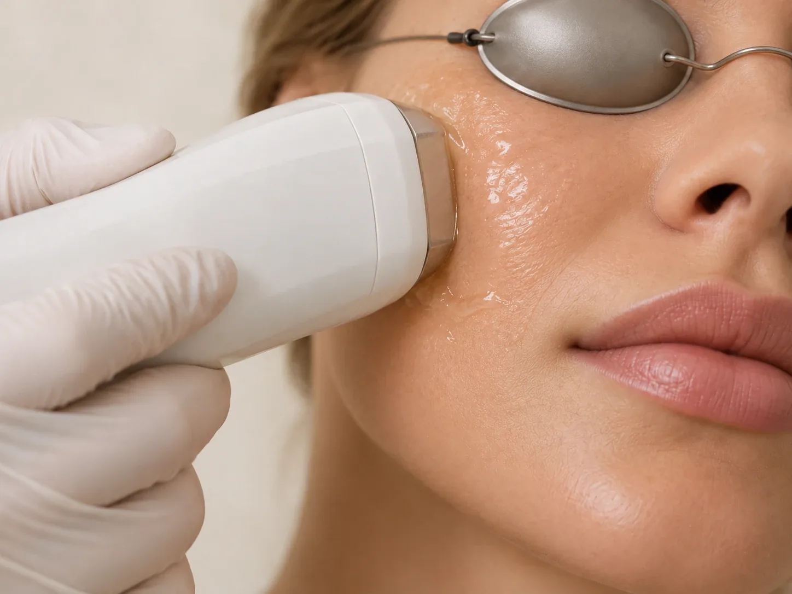

БояринцеваЮлия Игоревна
Врач-дерматовенеролог-косметолог
Диагностика и лечение заболеваний кожи, практическая, клиническая и аппаратная косметология
- Опыт
- 17 лет
Кожа и внешность
Фотоомоложение на аппарате Lumecca: купероз, сосудистые звёздочки, пигментные пятна.
Световые импульсы воздействуют на сосуды и пигмент в коже. Зоны и число процедур определяет врач-косметолог.

При фотоомоложении кожу обрабатывают короткими вспышками света. Свет поглощают расширенные сосуды и пигмент, поэтому покраснение и пятна со временем становятся менее заметными. Фотоомоложение лица, шеи, декольте и кистей рук проводят в клинике 8.0.8 в Москве, у метро «Римская», на аппарате Lumecca (люмекка). Записаться можно ежедневно с 9:00 до 21:00.
Фотоомоложение назначают при куперозе и сосудистых звёздочках, пигментных пятнах и неровном тоне кожи.
Процедуру обычно планируют на осень и зиму, когда меньше солнца. Перед курсом врач-косметолог проверит противопоказания и расскажет, как защищать кожу от солнца. Консультация перед процедурой бесплатная.
Врач расскажет:
Фотоомоложение – это обработка кожи интенсивным импульсным светом (IPL). Аппарат даёт короткие вспышки света широкого спектра. Свет поглощают гемоглобин в расширенных сосудах и меланин в пигментных пятнах: сосуды постепенно запустевают, а пигмент выводится с обновлением кожи.
Аппарат Lumecca для фотоомоложения выпускает компания InMode. Врач подбирает фильтр и параметры под зону, тип кожи и задачу: сосуды, пигмент или неровный тон.
Во время процедуры чувствуются тепло и короткие покалывания, похожие на щелчки. После неё кожа может покраснеть, а пигментные пятна на время потемнеть. Обычно это проходит за несколько дней.
Куперозом называют расширенные мелкие сосуды кожи, которые видны как красная сетка или отдельные «звёздочки». Простыми словами, сосуды теряют способность сужаться и остаются расширенными. Чаще всего купероз появляется на крыльях носа, щеках и подбородке.
Склонность к куперозу бывает у людей с тонкой и чувствительной кожей. Его усиливают солнце, перепады температуры, баня и сауна, алкоголь, острая и горячая еда. Иногда купероз бывает одним из признаков розацеа, хронического заболевания кожи, которое лечат комплексно.
Фотоомоложение помогает убрать уже видимые сосуды. Склонность к их появлению остаётся, поэтому со временем могут появиться новые. Врач расскажет, как ухаживать за кожей с куперозом, чего избегать и когда прийти на поддерживающую процедуру.
Пигментные пятна появляются там, где в коже накопилось больше меланина. Чаще всего это пятна от солнца, возрастные пятна и веснушки на лице, руках и в зоне декольте.
Фотоомоложение применяют при поверхностных пятнах с чёткими границами. После процедуры пятно обычно темнеет, а затем постепенно отшелушивается. Пигмент, который залегает глубоко, или пятна, связанные с гормонами, ведут себя иначе: от света они могут стать заметнее. В этом случае врач подберёт другой способ.
Перед процедурой врач осматривает пятна. Новые родинки и пятна, которые меняют цвет, форму или размер, сначала нужно показать врачу, и только потом решать вопрос о процедуре.
Врач-дерматовенеролог-косметолог
Диагностика и лечение заболеваний кожи, практическая, клиническая и аппаратная косметология
На аппарате Lumecca цена зависит от зоны: крылья носа 6 500 ₽, зона над губой 6 900 ₽, щёки или лоб 9 500 ₽, шея 10 500 ₽, кисти рук 11 900 ₽, лицо полностью или декольте 15 900 ₽, лицо и шея 22 500 ₽, лицо, шея и декольте 37 500 ₽. В прайсе также есть фотоомоложение одной зоны за 2 500 ₽ и абонемент на 5 процедур за 10 000 ₽: подробнее о них расскажет администратор.
Позвоните по телефону +7 (938) 099-30-09 или нажмите «Записаться» на этой странице: администратор подберёт удобное время и подскажет, как подготовиться. Клиника работает ежедневно с 9:00 до 21:00. Консультация врача-косметолога перед процедурой бесплатная.
В клинике 8.0.8: Москва, ул. Сергия Радонежского, 15–17, стр. 2, этаж 1. Рядом станции метро «Римская» и «Площадь Ильича».
Аппарат для фотоомоложения интенсивным импульсным светом (IPL). Его применяют при куперозе, сосудистых звёздочках и пигментных пятнах.
Фотоомоложение применяют при куперозе и сосудистых звёздочках. Подходит ли оно вам, врач решит после осмотра.
Это расширенные мелкие сосуды кожи, которые видны как красная сетка или «звёздочки», чаще на носу и щеках.
Фотоомоложение применяют при поверхностных пигментных пятнах (солнечных и возрастных) и веснушках. Подходит ли оно именно для ваших пятен, врач решит после осмотра.
Обычно осенью и зимой, когда меньше солнца. Перед процедурой нельзя загорать.
Чаще всего курс из нескольких процедур с перерывом в несколько недель. Точное число и интервал врач назовёт на консультации.
Да: беременность и кормление, свежий загар, приём препаратов, повышающих чувствительность к свету, воспаление в зоне обработки и другие. Полный список уточнит врач.
Имеются противопоказания. Необходима консультация специалиста.